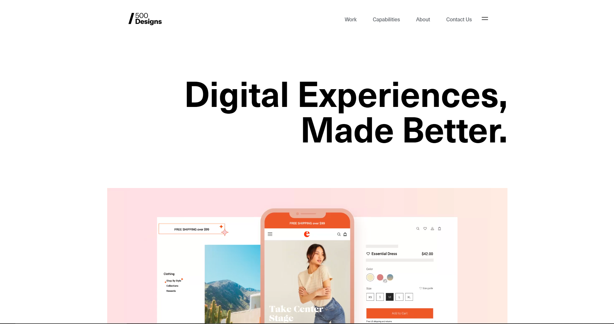

<section id="about" class="about">
  <div class="container about__container">
    <div class="about__img">
      
      <div class="about__img-bg"></div>
    </div>

    <div class="about__content">
      <h2 class="block-name about__title">О нас</h2>

      <svg class="about__company-name">
        <use href="#company-name"></use>
      </svg>

      <div class="text about__text">
        <p>
          Кстати, диаграммы связей, которые представляют собой яркий пример
          континентально-европейского типа политической культуры, будут
          представлены в исключительно положительном свете.
        </p>
        <p>
          Следует отметить, что начало повседневной работы по формированию
          позиции однозначно определяет каждого участника как способного
          принимать собственные решения касаемо экспериментов, поражающих по
          своей масштабности и грандиозности.
        </p>
      </div>
    </div>
  </div>
</section>
